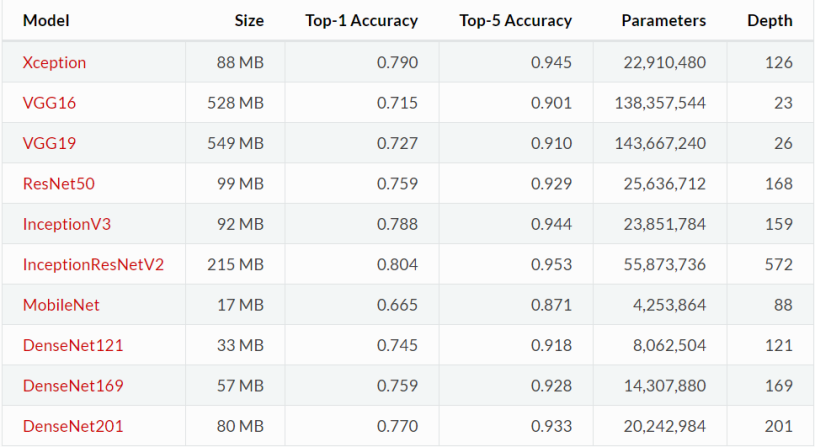

模型微调（fine-tune）
模型微调
Step 1 :假设我们的神经网络符合下面形式：
Y=W×X
Step 2 :现在我们要找到一个W, 使得当 输入X = 2 时，输出Y = 1，也就是希望W = 0.5
1=W×2
Step 3: 首先对W 要进行初始化， 初始化的值服从均值为0，方差为1的分布，假设W初始化为0.1
Y=0.1×X
Step 4 :当 输入X = 2 时, W = 0.1, 输出Y = 0.2, 这个时候实际值和目标值1的误差是0.8
1<—–0.2=0.1×2
Step 5 :0.8 的误差经过反向传播去更新权值W，假如这次更新为W = 0.2，输出为0.4，与目标值的误差为0.6:
1<—–0.4=0.2×2
Step 6 : 可能经过十次或二十次反向传播，W 终于等于我们想要的0.5
Y=0.5×X
Step 7 : 如果在更新模型最开始有人告诉你，W的值应该在0.47附近：
Y=0.47×X
Step 8 : 那么从最开始训练，你与目标值的误差就只有0.06了，那么可能只要一步两步*，就能将w训练到0.5
1<——0.94=0.47*2
总结: Step 7就是相当于给你一个预训练模型（Pre-trained model），Step 8 就是基于这个模型微调（Fine Tune）。相对于你从头开始训练(Training a model from scatch)，微调为你省去大量计算资源和计算时间，提高了计算效率,甚至提高准确率。
预训练模型（Pre-trained model）
预训练模型就是已经用数据集训练好了的模型。
现在我们常用的预训练模型就是他人用常用模型，比如VGG16/19，Resnet等模型，并用大型数据集来做训练集，比如Imagenet, COCO等训练好的模型参数。
正常情况下，我们常用的VGG16/19等网络已经是他人调试好的优秀网络，我们无需再修改其网络结构。
常用的一些模型如下图所示：

使用微调的原因
卷积神经网络的核心是：
1、浅层卷积层提取基础特征，比如边缘，轮廓等基础特征
2、深层卷积层提取抽象特征。比如整个脸型
3、全连接层根据特征组合进行评价分类
普通预训练模型的特点是：
已经用了大型数据集做训练，已经具备了提取浅层基础特征和深层抽象特征的能力。
如果不是使用微调而是自己从0开始训练的话：
1、需要大量的数据，计算时间和计算资源
2、存在模型不收敛，参数不够优化，准确率低，模型泛化能力低，容易过拟合等风险（因为如果是自己的数据集，可能数据量不会很大）
什么情况下使用微调
1、使用的数据集和预训练模型的数据集相似，如果不太相似，比如你用的预训练的参数是自然景物的图片，你却要做人脸的识别，效果可能就没有那么好了，因为人脸的特征和自然景物的特征提取是不同的，所以相应的参数训练后也是不同的。
2、自己搭建或者使用的CNN模型正确率太低
3、数据集相似，但数据集数量太少
不同数据集下使用微调
数据集1 - 数据量少，但数据相似度非常高 - 在这种情况下，我们所做的只是修改最后几层或最终的softmax图层的输出类别。
数据集2 - 数据量少，数据相似度低 - 在这种情况下，我们可以冻结预训练模型的初始层（比如k层），并再次训练剩余的（n-k）层。由于新数据集的相似度较低，因此根据新数据集对较高层进行重新训练具有重要意义。
数据集3 - 数据量大，数据相似度低 - 在这种情况下，由于我们有一个大的数据集，我们的神经网络训练将会很有效。但是，由于我们的数据与用于训练我们的预训练模型的数据相比有很大不同。使用预训练模型进行的预测不会有效。因此，最好根据你的数据从头开始训练神经网络（Training from scatch）。
数据集4 - 数据量大，数据相似度高 - 这是理想情况。在这种情况下，预训练模型应该是最有效的。使用模型的最好方法是保留模型的体系结构和模型的初始权重。然后，我们可以使用在预先训练的模型中的权重来重新训练该模型。
使用微调的常用做法
1.通常的做法是截断预先训练好的网络的最后一层（softmax层），并用与我们自己的问题相关的新的softmax层替换它。例如，ImageNet上预先训练好的网络带有1000个类别的softmax图层。如果我们的任务是对10个类别的分类，则网络的新softmax层将由10个类别组成，而不是1000个类别。然后，我们在网络上运行预先训练的权重。确保执行交叉验证，以便网络能够很好地推广。
2.使用较小的学习率来训练网络。由于我们预计预先训练的权重相对于随机初始化的权重已经相当不错，我们不想过快地扭曲它们太多。通常的做法是使初始学习率比用于从头开始训练（Training from scratch）的初始学习率小10倍。
3.如果数据集数量过少，我们进来只训练最后一层，如果数据集数量中等，冻结预训练网络的前几层的权重也是一种常见做法。这是因为前几个图层捕捉了与我们的新问题相关的通用特征，如曲线和边。我们希望保持这些权重不变。相反，我们会让网络专注于学习后续深层中特定于数据集的特征。